Sieg zum Abschied – ein emotionaler Nachmittag im Gesundbrunnen
Manche Fußballspiele sind mehr als nur 90 Minuten. Manche Nachmittage bleiben in Erinnerung, weil sie Geschichten schreiben, die weit über das Sportliche hinausgehen.
Der letzte Spieltag der Oberliga-Saison 2025/26 war genau so ein Tag. Mit einem 4:3-Heimsieg gegen den FC Einheit Wernigerode verabschiedete sich unsere Jungs aus der Oberliga. Doch an diesem Nachmittag rückte das Ergebnis vielleicht für einen kleinen Moment in den Hintergrund. Zu besonders waren die Abschiede. Zu groß die Emotionen.
Tavares bringt den SCH früh in Führung
Vor 370 Zuschauern im Gesundbrunnenstadion erwischte unsere Mannschaft einen guten Start. Bereits in der 9. Minute brachte Keliano Tavares den SCH mit 1:0 in Führung. Die Gäste aus Wernigerode zeigten jedoch, warum sie die Saison im gesicherten Mittelfeld beenden konnten. Benjamin St. Louis glich zunächst aus, ehe Julian Schmidt die Partie sogar zugunsten der Harzer drehte.Doch die Seipel-Elf ließ sich davon nicht beeindrucken. Kurz vor dem Pausenpfiff sorgte Maciej Wolanski mit einem sehenswerten Heber für den verdienten Ausgleich zum 2:2 und stellte den Spielverlauf wieder auf Anfang.
Der Moment, der allen in Erinnerung bleiben wird
Die wohl emotionalste Szene des Tages ereignete sich kurz nach der Halbzeit. In der 54. Minute verließ Sebastian Möhlhenrich unter großem Applaus zum letzten Mal den Rasen des Gesundbrunnenstadions. Nach mehr als drei Jahrzehnten Fußball, 619 Pflichtspielen und unzähligen Erinnerungen endete die außergewöhnliche Laufbahn unseres Kapitäns. Beide Mannschaften bildeten ein Spalier. Die Zuschauer erhoben sich von ihren Plätzen. Minutenlang hallte der Applaus durch das Stadion. Ein Moment, der zeigte, welchen Stellenwert „Möhle“ für unseren Verein und die Region besitzt. Einer, der sein gesamtes Fußballleben in Blau und Weiß verbracht hat. Einer, dessen Name untrennbar mit dem SCH verbunden bleiben wird.
Tavares dreht die Partie im Alleingang
Kurz zuvor hatte Wernigerode durch Usman Taiwo erneut die Führung erzielt und auf 2:3 gestellt. Doch unsere Mannschaft wollte sich an diesem besonderen Tag nicht geschlagen geben.
Und dann kam die große Bühne für Keliano Tavares. Der Winterneuzugang übernahm Verantwortung und drehte die Partie innerhalb von nur zwei Minuten. Mit seinem zweiten Treffer glich der Franzose zunächst aus, ehe er wenig später seinen Dreierpack perfekt machte und den SCH wieder in Führung schoss. Die Blau-Weißen verteidigten den Vorsprung anschließend mit Leidenschaft und brachten den vierten Saisonsieg über die Zeit.
Abschied von Menschen, die den SCH geprägt haben
Neben Sebastian Möhlhenrich wurden weitere Persönlichkeiten verabschiedet, die den Verein in den vergangenen Jahren geprägt haben. Mit Yannick Stellmann, Alexander Rohner und Maximilian Henkel beendeten gleich drei Spieler ihre aktive Laufbahn. Moritz Ruprecht wurde nach seinem halben Jahr beim SCH verabschiedet und wird künftig einen neuen Weg einschlagen. Auch für Cheftrainer Benedikt Seipel endete die Zeit beim SCH. Nach intensiven Monaten an der Seitenlinie verabschiedete sich der Coach von Mannschaft, Verein und Fans. Ebenfalls emotional wurde es für Christoph Rodenstock, der nach vielen Jahren seine Tätigkeit als Teammanager beendete. Dem Verein bleibt er als Vizepräsident weiterhin erhalten.
Spieldaten
1. SC 1911 Heiligenstadt – FC Einheit Werningerode 4:3 (2:2)
SC Heiligenstadt
Fröhlich – Wolanski (61. Akhtyrskyi) – Lerch – Tavares (78. Opfermann) – Stashenko – Wilhelm (61. Vogt) – Möhlhenrich (54. von Breitenbuch) – Dornieden (46. Michalek) – Schnellhardt – Voilenko – Bako
FC Einheit Werningerode
Lohse – Kuhnhold – Wersig (61. Radomski) – Raeck – Schmidt – St. Louis (61. St. Louis) – Hess – Müller – Taiwo (61. Pandyal) – Hunter (61. Singbeil) – Schmidt (61. Treu)
Schiedsrichter
Haubenschild
Zuschauer
370
Tore
1:0 Tavares (9.), 1:1 St. Louis (13.), 1:2 Schmidt (26.), 2:2 Wolanski (41.), 2:3 Taiwo (50.), 3:3 Tavares (61.), 4:3 Tavares (63.)
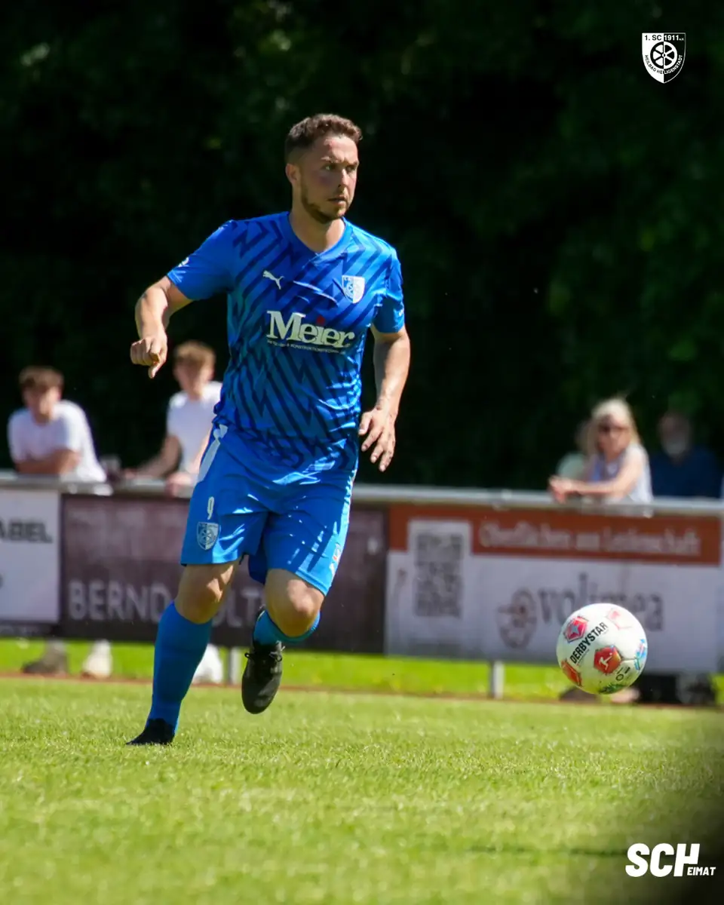
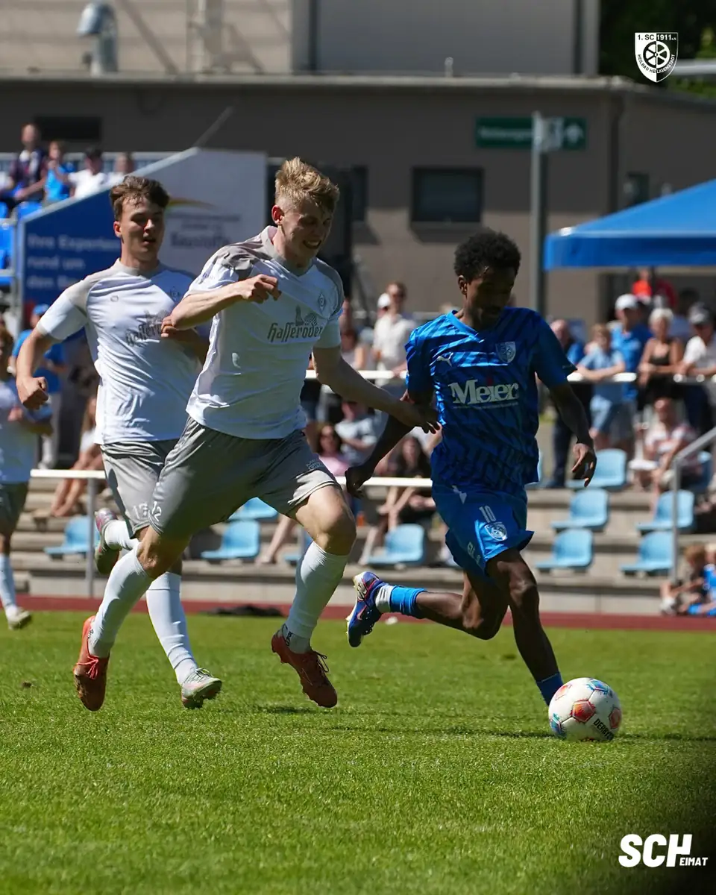
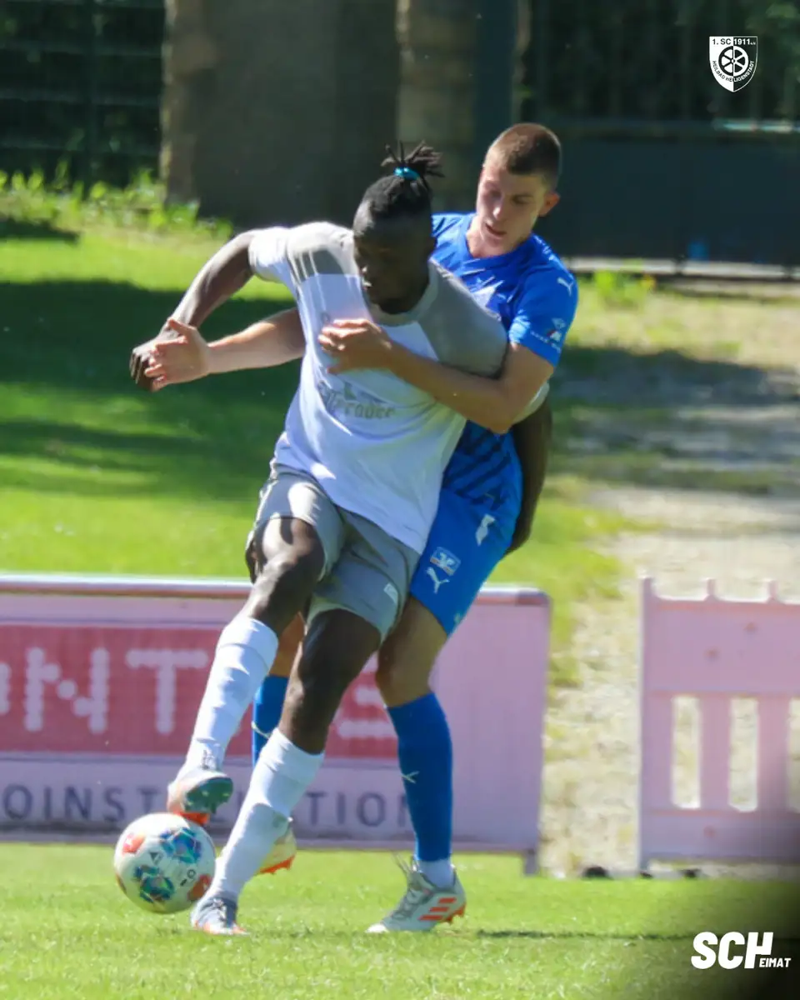
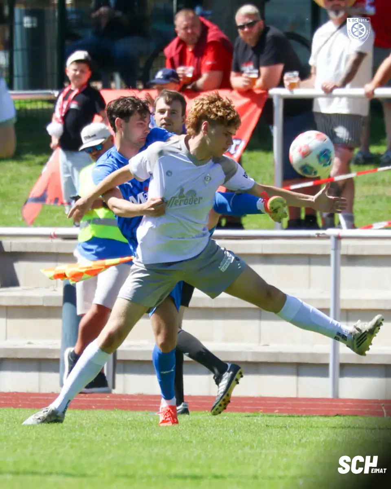
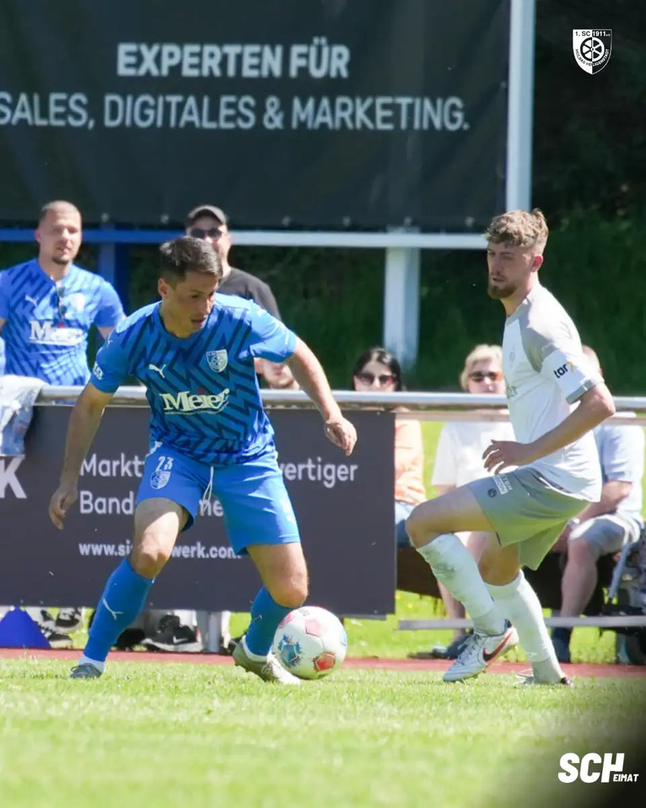
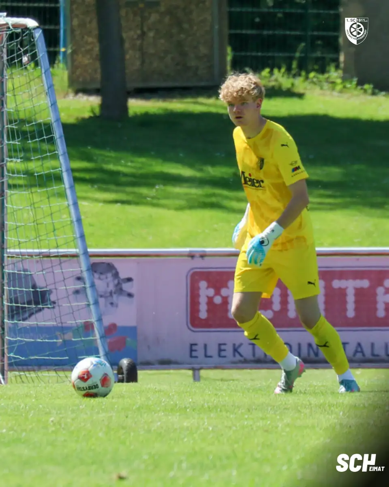
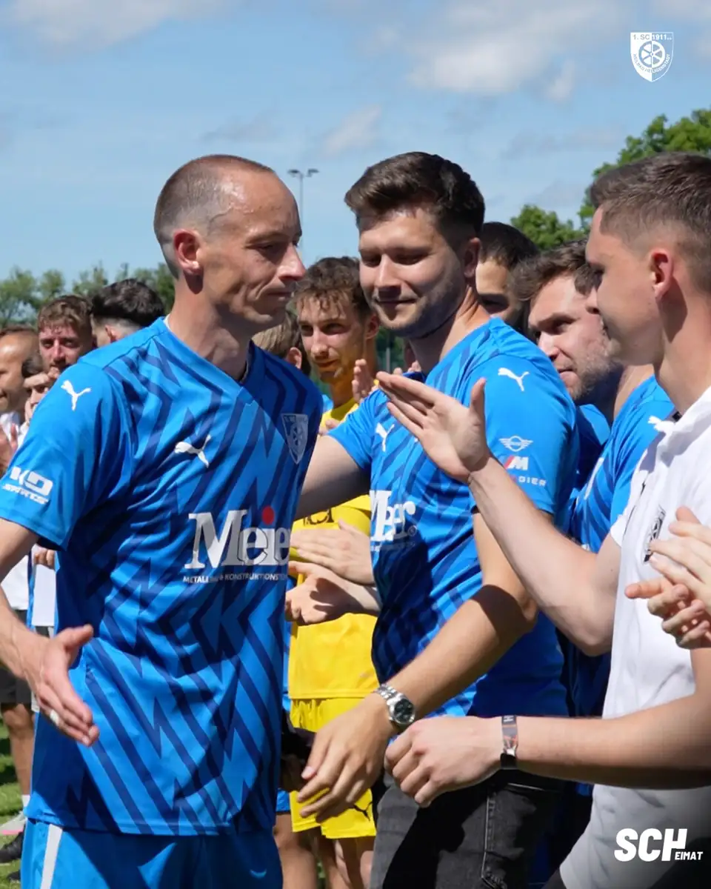
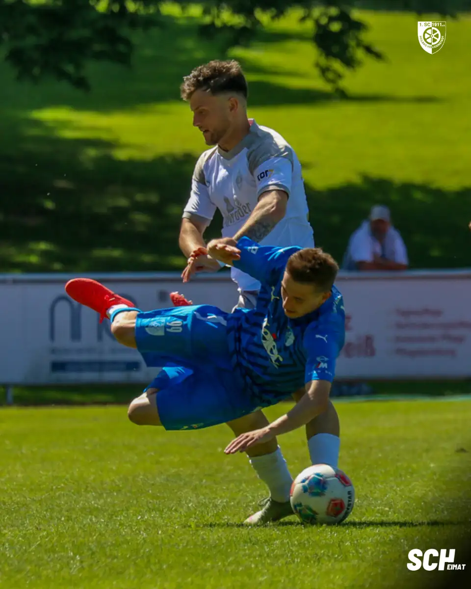
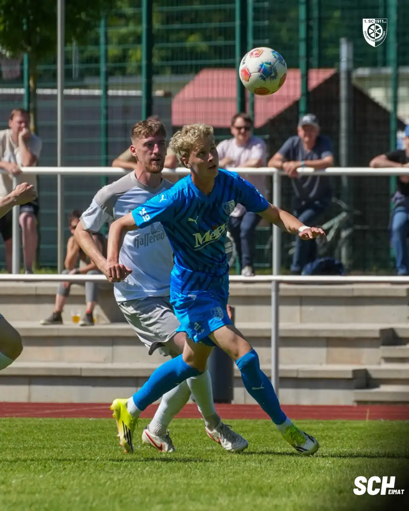
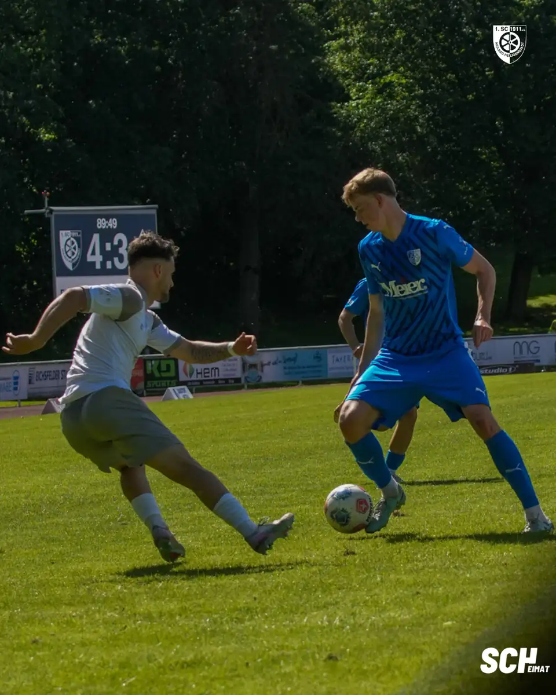
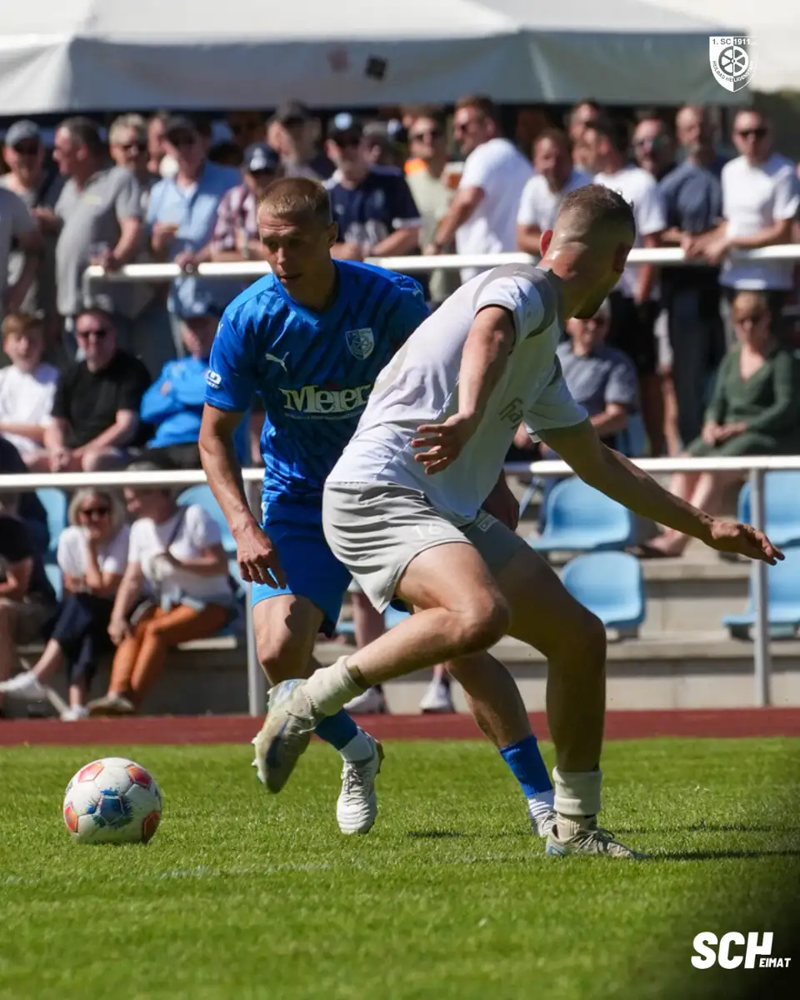
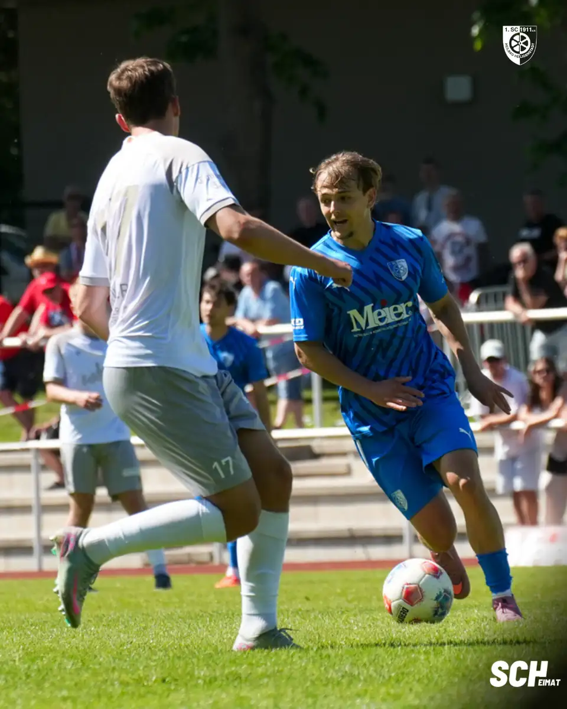